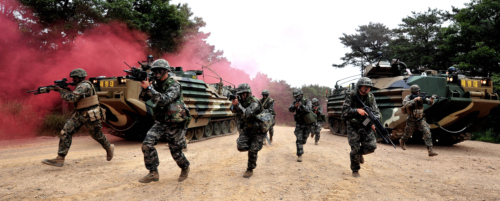

United States Marine Corps
Republic of Korea Marine Corps
Australia Marine Corps
Republic of korea marine corps

The Republic of Korea Marine Corps (Korean:), also known as the ROK Marine Corps (ROKMC),
or the ROK Marines, is the marine corps of South Korea. The ROKMC is a branch of the Republic of Korea Navy
responsible for amphibious operations,[1] and also functions as a rapid reaction force and a strategic reserve.
The ROKMC was founded as a suppression operations force against communist partisans in 1949, prior to the Korean War.
The ROKMC also fought in combat during the Vietnam War.
The ROK Marine Corps, with 29,000 personnel, is organized into two divisions and two separate brigades under the
Headquarters ROK Marine Corps. The ROK Marine Corps has about 300 tracked vehicles including assault amphibious
vehicles, main battle tanks, and self-propelled artillery.